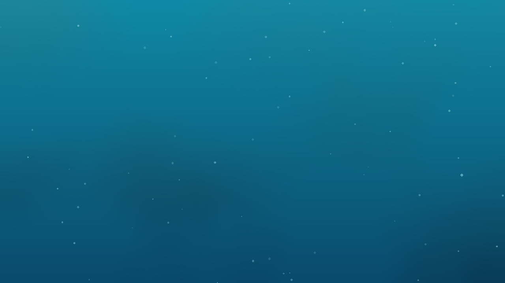
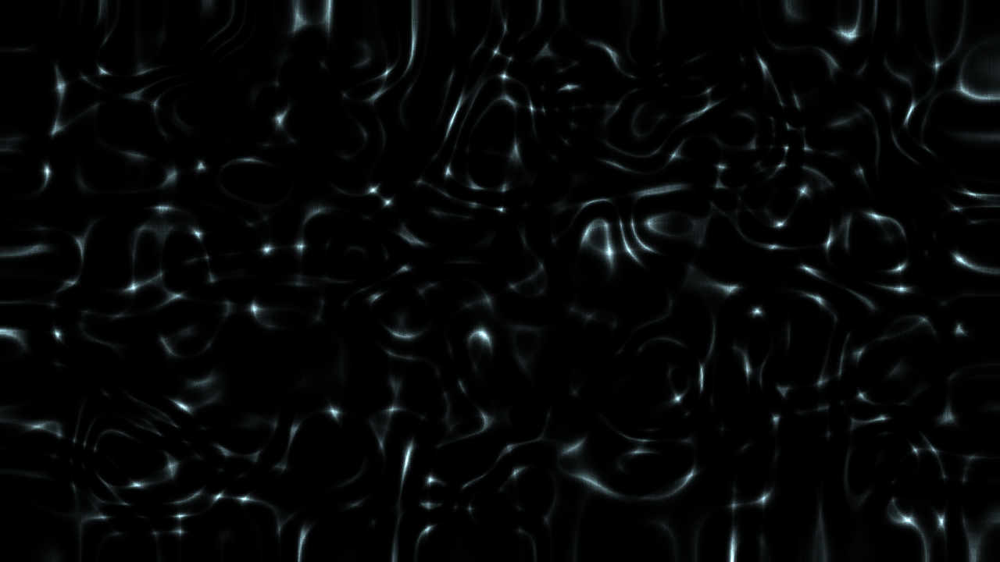

Sunlight zone · 0 to 200 m
Twilight zone
200 to 1,000 m
1
atmosphere at the surface
atmospheres
+1 ATM PER 10 M
Challenger Deep · about 10,900 m
1,000 m · last sunlight
Below 1,000 m: no sunlight
0%
of animals seen made their own light
17 years of ROV video off California · Martini & Haddock 2017
Sunlight ends.
Light does not.
Depth
0 m